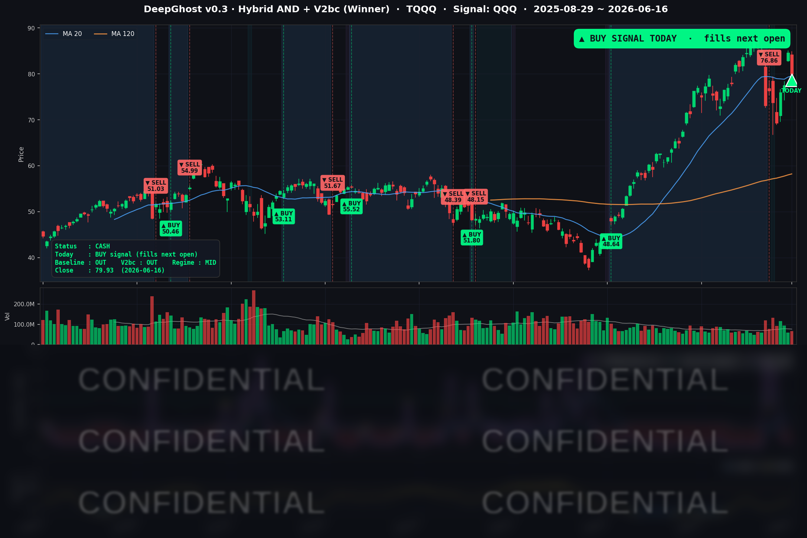

Anthropic, SpaceX 관련 큰 하락장 후 매수 신호가 나왔습니다. 체결은 다음 거래일(6/17) 미국 장 시초가이며, 하필 같은 날 신임 의장의 첫 FOMC 회견이 예정돼 있습니다. 사실 AI가 왜 매수 시그널을 내었는지 해석은 불가능합니다. 추측해 보건데 최근 큰 상승 후 일시적인 되돌림으로 판단한 것 같습니다. 매매는 그냥 정해진대로 합니다.
📊 오늘의 매매 신호
| 항목 | 내용 |
|---|---|
| 오늘 할 일 | 🟢 TQQQ 매수 신호 발생 — 매매는 오늘(6/17) 저녁 미국 장 개장 직후 (한국시간 오후 10:30~) |
| 포지션 상태 | 💵 현재는 현금 보유 중 (OUT OF POSITION) → 매수 신호 발동 |
| 신호 발생일 | 2026-06-16 (체결 예정일 2026-06-17 시초가) |
| 직전 현금 보유 기간 | 2026-06-08 ~ 2026-06-16 |
6월 8일 약 +70% 수익으로 포지션을 정리한 뒤 8일 가까이 현금을 들고 관망하던 모델이, 오늘 마침내 매수 신호를 띄웠습니다. 우리 모델은 신호가 난 다음 거래일 미국 장 시초가에 매수가 체결되는 구조라, 실제 진입은 6월 17일(미국시간)이 됩니다.
TQQQ 시그널 — OUT OF POSITION
현재 상태: 현금 보유 중 | 매수 신호 발동 → 6/17 시초가 체결 예정

오늘 TQQQ 종가는 $79.93으로 하루 만에 -5.51% 내렸습니다. 어제 +9% 넘게 급등했던 것을 상당 부분 되돌린 셈입니다.
이 진입이 편안한 진입은 아닙니다. 체결일인 6월 17일은 연준 회의 결과와 신임 의장의 첫 기자회견이 열리는 날입니다. 모델은 이벤트를 보지 않기 때문에, 신호가 났다면 그 자체로 "지금이 진입할 자리"라는 판단입니다. 오늘 하락은 일시적 차익실현 이라는 판단 인듯 합니다. 모델은 과거 수십 년의 시장 데이터를 학습해 경험적으로 가장 유리한 방향을 알려줄 뿐, 이벤트를 피하지 않습니다. 그래서 진입 첫날부터 연준 이벤트의 변동성을 떠안게 됩니다. 우호적인 점도 분명합니다. 이번 하락은 무언가 무너져서가 아니라 연준 결과를 앞둔 관망과 차익 실현 성격이 강하고, 금리도 우호적이며 시장의 공포 지표도 패닉 수준은 아닙니다. 그럼에도 3배 레버리지는 양날의 검이니, 변동성을 견딜 마음의 준비는 해두시는 게 좋습니다.
오늘 미국 시장 — 시황 요약
지수 마감
| 지수 | 종가 | 등락률 |
|---|---|---|
| S&P 500 | 7,511.35 | -0.57% |
| 나스닥 종합 | 26,376.34 | -1.15% |
| 다우 존스 | 51,999.67 | +0.64% |
| 러셀 2000 | 2,939.19 | -0.87% |
뚜렷한 자금 이동이 나타난 하루였습니다. 다우(+0.64%)만 홀로 올랐고, 나스닥(-1.15%)과 QQQ(-1.90%)는 크게 빠졌습니다. 대형 기술·반도체에서 산업·금융·경기방어 같은 가치주로 돈이 옮겨간 모습입니다. 어제 나스닥이 +3% 넘게 급등했던 만큼, 오늘 기술주 하락은 하루 만의 강한 되돌림 성격이 강합니다.
국채 금리 동향
| 만기 | 수익률 | 전일 대비 |
|---|---|---|
| 3개월 | 3.630% | +1.2bp |
| 5년 | 4.151% | -6.2bp |
| 10년 | 4.428% | -5.9bp |
| 30년 | 4.928% | -4.7bp |
단기 금리(3개월)는 거의 제자리였고, 중장기 금리(5년·10년·30년)가 동반 하락했습니다. 10년물에서 3개월물을 뺀 장단기 스프레드는 +79.8bp로 정상적인 우상향 형태를 유지했습니다. 주목할 점은 이날 금리는 주가에 역풍이 아니었다는 것입니다. 오히려 중장기 금리 하락은 만기가 긴 성장주에 우호적인 환경이며, 기술주 하락의 원인은 금리가 아니라 섹터 이동과 차익 실현, 그리고 유가 급락에 따른 물가 부담 완화 기대였습니다. 채권 강세(금리 하락)는 FOMC 결과를 앞둔 안전선호와 맞닿아 있습니다.
연준 발언 & 금리 패스
6월 FOMC는 6월 16~17일 이틀간 열리고 있으며, 금리 결정·점도표(dot plot)·기자회견은 6월 17일에 발표됩니다. 즉 오늘(6/16) 시장은 연준 결과를 코앞에 둔 관망 국면이었습니다. 금리 동결이 컨센서스이지만, 이번 회의는 변수가 하나 더 있습니다. 파월 의장의 임기가 끝나고 신임 케빈 워시(Kevin Warsh) 의장이 처음 주재하는 회의라는 점입니다. 신임 의장의 첫 기자회견 톤이 향후 금리 경로에 대한 시장 기대를 좌우할 가능성이 커, 6월 17일 변동성의 핵심 방아쇠로 꼽힙니다.
오늘의 핵심 이슈
- 반도체 전반의 되돌림 하락. 어제 급등을 주도했던 종목들이 일제히 빠졌습니다. 6월 초 한 대형 반도체 기업의 AI 네트워킹 매출이 기대에 못 미친 이후 형성된 "지나치게 몰린 AI·칩 거래"의 차익 실현이 다시 나타난 흐름입니다.
- 유가 급락. WTI는 -6.04%($75.87), 브렌트유는 -4.35%($79.55)로 내렸습니다. 미국·이란 휴전 양해각서 서명 기대와 호르무즈 해협 재개통 전망으로 공급 우려가 빠르게 가라앉았습니다(2026년 고점 대비 약 -20%). 물가 부담을 낮추는 방향이라 중장기 금리 하락을 거들었습니다.
- FOMC 대기 디리스킹과 자금 이동. 6월 17일 금리 결정과 신임 의장 첫 회견을 앞두고 성장주에서 다우·산업·금융·경기방어로 자금이 옮겨갔습니다. 다우만 플러스로 마감한 점이 이 흐름을 잘 보여줍니다.
변동성 & 투자심리
- VIX(공포지수): 16.41 — 전일(16.20) 대비 +1.30%로 소폭 올랐지만, 절대 수준은 여전히 낮은 16대입니다. 패닉이 아니라 질서 있는 차익 실현과 관망에 가깝습니다.
- 공포탐욕지수(Fear & Greed): 약 41 (공포) — 전일과 비슷한 '공포' 구간이지만 극단적 공포는 아닙니다. 연준 이벤트를 앞둔 대기성 심리로 읽힙니다.
전반적으로 자금이 시장을 떠났다기보다는 다우·금 같은 방어 자산으로 옮겨간 모습이라, 시스템 위험이라기보다 이벤트 대기성 디리스킹에 가깝습니다.
매크로 & 원자재
- 유가: WTI $75.87(-6.04%), 브렌트 $79.55(-4.35%) — 미국·이란 휴전 진전 기대로 급락. 다만 이행 방식과 해상 안전 등 불확실성이 남아 유가가 다시 튈 가능성도 양방향으로 열려 있습니다.
- 금: $4,355.50(+0.64%) — 소폭 상승하며 안전선호를 반영했습니다. 위험자산이 빠지는 가운데 금이 오른 것은 시장 한편의 경계감이 남아 있음을 시사합니다.
주요 종목 동향
| 종목 | 전일 종가 | 당일 종가 | 등락률 | 비고 |
|---|---|---|---|---|
| INTC | 127.86 | 117.05 | -8.45% | 커버리지 내 최대 낙폭, 반도체 차익 실현 직격 |
| MU | 1,087.99 | 1,020.76 | -6.18% | 전일 +10.84% 급등을 되돌림 |
| AVGO | 393.94 | 376.71 | -4.37% | AI 인프라 반도체 약세 지속 |
| NFLX | 81.67 | 78.72 | -3.61% | 미디어 약세, 전일 급등 되돌림 |
| QCOM | 220.81 | 214.07 | -3.05% | 반도체 동반 하락 |
| NVDA | 212.45 | 207.41 | -2.37% | 나스닥 하락 주도, 칩 차익 실현 |
| TSLA | 411.15 | 404.66 | -1.58% | 성장주 디리스킹 |
| MSFT | 399.76 | 393.83 | -1.48% | 메가캡 기술 약세 동조 |
| AMZN | 246.02 | 246.00 | -0.01% | 보합 |
| AAPL | 296.42 | 299.24 | +0.95% | 방어적 상승, 자금 이동 수혜 |
| GOOGL | 369.35 | 373.25 | +1.06% | 전일 덜 오른 플랫폼 반등 |
| META | 593.48 | 600.21 | +1.13% | 차별화 상승 |
하락은 반도체와 어제 급등했던 종목에 집중됐습니다. 반대로 어제 상대적으로 덜 올랐던 애플·구글·메타는 오히려 반등하며 차별화된 흐름을 보였습니다. 전형적인 "되돌림 + 자금 이동" 장세였습니다.
Ghost.AI — Quantitative AI Investment
Model: DeepGhost v0.3 | Transformer-Based Deep Learning
Coverage: 13 tickers | Updated every trading day after US market close
⚠️ 본 자료는 정보 제공 목적으로만 작성되었으며 투자 권유가 아닙니다. 모든 투자의 책임은 투자자 본인에게 있습니다. 과거 성과가 미래 수익을 보장하지 않습니다.
[유의사항]
고스트에이아이 주식회사는 「자본시장과 금융투자업에 관한 법률」 제101조에 따른 유사투자자문업자로 등록된 사업자입니다.
- 본 서비스는 불특정 다수를 대상으로 발행되는 단방향 정보 제공 서비스이며, 투자자 개인의 재산 상황·투자 목적·위험 선호도를 반영한 개별 투자 조언이 아닙니다.
- 고스트에이아이 주식회사는 고객과 쌍방향 의사소통(개별 상담, 맞춤형 자문 등)을 제공하지 않습니다.
- 본 콘텐츠는 투자 권유 또는 매매 주문의 청약·청약의 권유에 해당하지 않으며, 최종 투자 판단 및 그에 따른 손익의 책임은 전적으로 투자자 본인에게 있습니다.
고스트에이아이 주식회사 | 유사투자자문업 등록번호: 제2025-000호